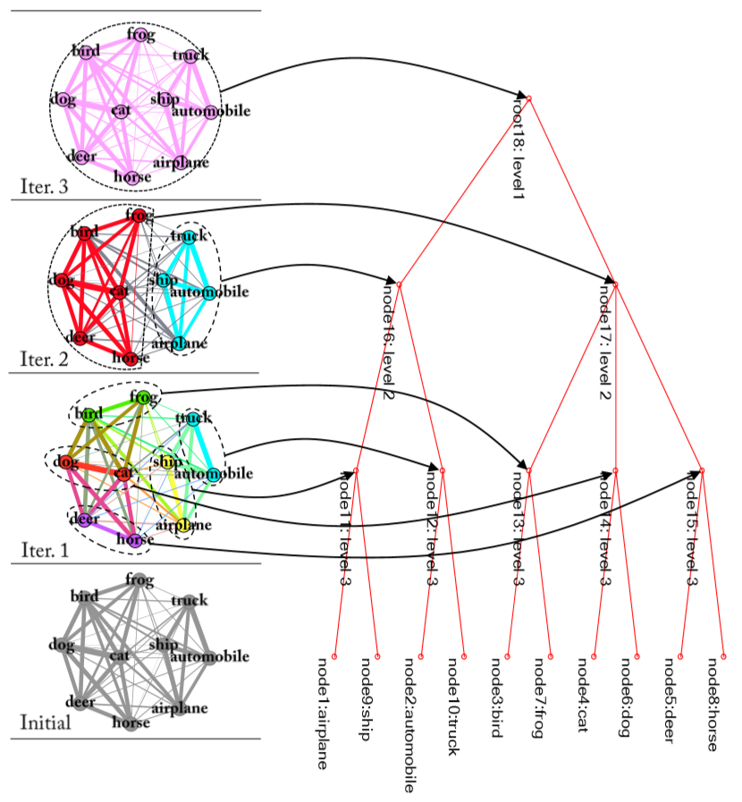
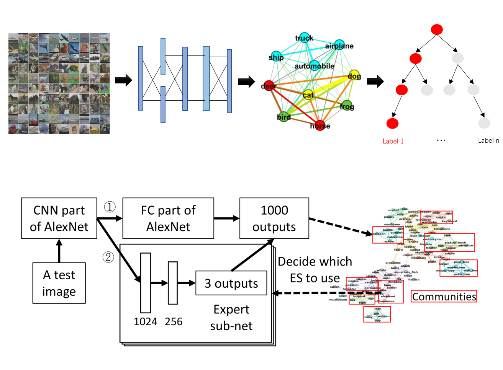
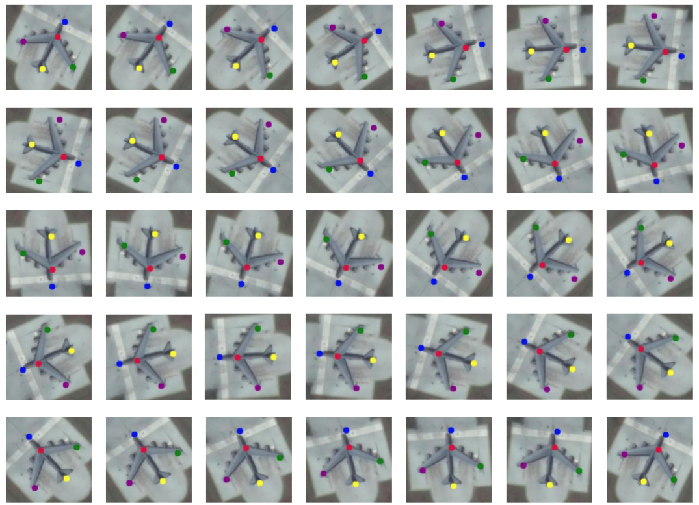
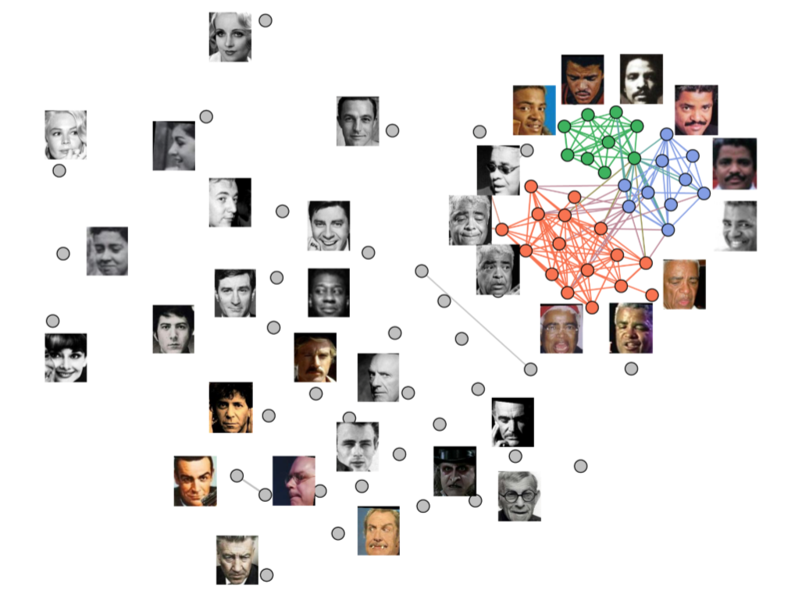
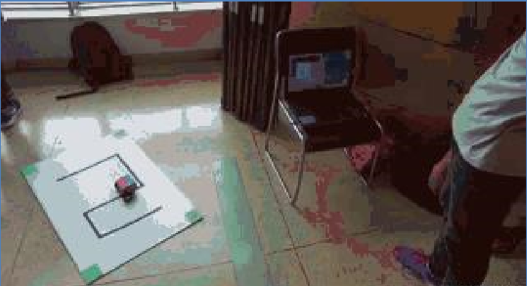

- Location:Location: Changsha, Hunan, China
- Email: Email: liuyuntao16@nudt.edu.cn
Info
Education
Ph.D. Artificial Intelligence
National University of Defense Technology 2019-2023(expected)
M.Eng. Computer Science and Technology
National University of Defense Technology 2016-2019
B.Eng. Electronic Information and Electrical Engineering
Shanghai Jiao Tong University
2012-2016
About Me
I am a Ph.D. Student in National Key Laboratory for Parallel and Distribution Processing (PDL) at National University of Defense Technology (NUDT), advised by Prof. Yong Dou. I got the M.Eng. in National University of Defense Technology in Janurary 2019 and the B.Eng. in Shanghai Jiao Tong University in June 2016.
My research interests focus on Visual Perception (image recognition, object localization, detection, etc.) and Weakly and Semi Supervised Learning (e.g. Weakly Supervised Object Detection). Particularly I am committed to developing deep learning systems that can learn from limited annotations like humans.
Publications

Visual Confusion Label Tree For Image Classification
IEEE International Conference on Multimedia and Expo (ICME), 2018.
The proposed technique constructs a Visual Confusion Label Tree based on the output of the convolution neural network models, and uses a multi-kernel SVM plus classifier with hierarchical constraints to train the tree classifier.

Visual Tree Convolutional Neural Network in Image Classification
24th International Conference on Pattern Recognition (ICPR), 2018.
The proposed technique builds a Confusion Visual Tree(CVT) based on the confused semantic level information to identify the confused categories. With the information provided by the CVT, we can lead the CNN training procedure to pay more attention on these confused categories. Therefore, we propose Visual Tree Convolutional Neural Networks(VT-CNN) based on the original deep CNN embedded with our CVT.
Selected Projects

Intelligent Image Algorithm, 2019 Deep Learning Image Recognition Python
In this project, I developed a flexible image classification system based on deep learning method, which aims at plugging in all kinds of neural networks. It firstly learns prior information from the target image dataset and then constructs a tree structure on this dataset. With the tree structure, the system can add new branches into original neural networks and apply tree based regularization during traning procedure. I use python to implement the entire image classification system.

Research on Deep Learning Technology and System for Multiple Remote Sensing Images, 2018 Deep Learning Remote Sensing Image Module
To address the challenge of object detection in the aerial remote sensing images, I joined the team in my laboratory to develop an Aerial Object Detection system. The system can be trained end-to-end with limited data and generate precise tiny bboxes.

Face Detection in Real Scenes, 2017 Deep Learning Face detection Application
In this project, I apply the FaceNet face detection algorithm system in real scenes and our real world. This project overcomes the problem of low image quality in real scenes and it can achieve real-time face detection with the help of our FPGA accelorating team. The system was successfully applied in affiliated primary school of our university.
Cross-platform Face Recognition System, 2015 Deep Learning Face Recognition Cross-platform System
As the project leader, I developed a Face Recognition System, which can locate person's faces under various light conditions and recognize their identification in real-time (~20fps). Moreover, this system can be achieved in Web, PC and Mobile (e.g. Android & iOS) platforms, which is convenient to be used in our daily life.

Programmable Car Tracking in Maze, 2014 Tracking Analysis Vision FPGA Program
I led a team of three people to develop a Training-Free system that uses computer vision algorithms to analyze the trajectory in mazes and then automatically calculate the next position stage which can effectively lead the car.
Research Experience
Research Student - National University of Defense Technolog, PDL (03/2019 - Present)
Advised by Prof. Yong Dou
- Research of improving the capability of Convolutional Neural Networks (CNNs) to handle significant person recognition (e.g. face detection, pose estimation).
- Research of developing weakly supervised object localization frameworks to process large-scale rough annotated data.
Research Student - National University of Defense Technology, PDL (09/2016 - 01/2019)
Advisor: Prof. Yong Dou
- Research of Image Classification.
Student - Shanghai Jiao Tong University (09/2012 - 06/2016)
- Programmable Car Tracking in Maze, 2014. (project leader)
- Depth Field Estimation System based on Dual Cameras , 2015. (project leader)
- Cross-platform Face Recognition System, 2015. (project leader)